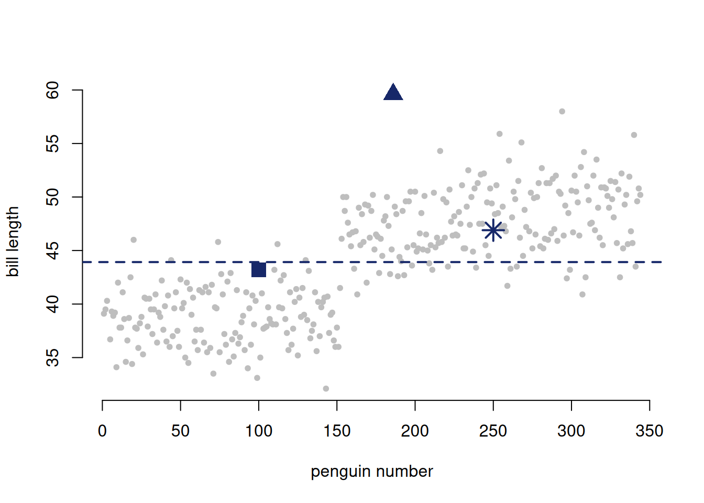

#install.packages("palmerpenguins")
library("palmerpenguins")
Attaching package: 'palmerpenguins'The following objects are masked from 'package:datasets':
penguins, penguins_rawIn this chapter, we will meet the linear model and discuss what it is exactly that we are doing when we build linear models.
We’ll build the most basic type of linear model by fitting the mean of a distribution.
We’ll also learn to interpret residuals and visualize them with R.
As biologists, we often want to understand if one thing causes another thing.
To answer these types questions, we need a way to carefully relate two variables together. We will refer throughout this course to two types of variables:
Linear models estimate the conditional mean of the \(i^{th}\) observation of a continuous response variable, \(\hat{Y}_i\) from a (combination) of value(s) of the explanatory variables (\(\text{explanatory variables}_i\)):
\[\begin{equation} \hat{Y}_i = f(\text{explanatory variables}_i) \end{equation}\]
These models are “linear” because we estimate of the conditional mean (\(\hat{Y}_i\)) by adding up all components of the model. So, each explanatory variable \(x_{j,i}\) is multiplied by its effect size \(b_j\). It might help to look at an example model below:
\[\begin{equation} \hat{Y}_i = b_0 + b_1 x_{1,i} + b_2 x_{2,i} + \dots{} \end{equation}\]
In this example, \(\hat{Y}_i\) is estimated as the sum of the “intercept” (\(b_0\)), its value for the first explanatory variable (\(x_{1,i}\)) times the effect of this variable (\(b_1\)), its value for the second explanatory variable (\(x_{2,i}\)) times the effect of this variable, \(b_2\), and so on for all included explanatory variables.
In practice, fitting a linear model requires picking explanatory variables and then estimating the values of \(a\), \(b_1\), \(b_2\), and so on that best predict the response variables. These estimates then tell us how the explanatory variables relate to the response variable.
We are going to start with the simplest linear model possible. You likely already know how to calculate the mean (\(\overline{y}\)) of a set of data: \(\overline{y} = \frac{\sum y_i}{n}\) where \(y_i\) is each data point and \(n\) is the number of samples.
In the simplest linear model we can also think of the mean as the intercept (\(b_0\)) so we can predict each data point \(y_i\) as simply the mean plus an error term or residual (\(e_i\)).
\[\hat{y}_i = b_0 + e_i\]
Observed values often differ from the predictions made by a linear model.
We define a residual (\(e_i\)) as the difference between an observed value(\(Y_i\)) and its predicted value from a linear model (\(\hat{y}_i\)).
\[e_i = y_i - \hat{y}_i\]
You can also rearrange this to think about it the other way around so that the observed variable (\(Y_i\)) is the sum of the value predicted by the model (\(\hat{y}_i\)) and the residual \(e_i\).
\[y_i = \hat{y}_i + e_i\]
We will use the principals of likelihood to pick the parameters that best fit the linear model.
Throughout this section we’ll be using a dataset of penguin traits. This data should be already available in your version of R, but if it isn’t, use the following code to install it.
#install.packages("palmerpenguins")
library("palmerpenguins")
Attaching package: 'palmerpenguins'The following objects are masked from 'package:datasets':
penguins, penguins_rawYou can read more about all the variables available in the package
?penguinsWe’ll start by thinking about body size. We want to model each penguin’s body mass as the sum of a mean body mass and a residual.
\[\text{penguin body mass} = \text{mean body mass} + e_i\]
A key piece of our linear model is that the residuals follow a specific distribution. In this part of the course we will focus on the normal distribution since it is broadly useful, but you could use any distribution you want. Models with residuals that follow non-normal distributions are called Generalized Linear Models
In math terms, we would write
\[ e_i \sim N(0, \sigma^2)\] where \(\sigma^2\) is the variance of the residuals. The mean of the residuals is 0.
Remember that the standard deviation is the squsre root of the variance and the standard error is the standard deviation divided by the square root of the sample size: \(\sigma_{\bar{x}} = \frac{\sigma}{\sqrt{n}}\)
We can combine the equation for a linear model with the equation describing the distribution of the variables and get
\[y_i = b_0 + N(0, \sigma^2)\]
and this simplifies to
\[ y_i \sim N(b_0, \sigma^2)\]
For our penguin example
\[ \text{penguin body mass} \sim N(\text{mean body mass}, \sigma^2)\]
Note that a linear model has two components: a deterministic component and a stochastic component. The deterministic component tells us about how the explanatory variable relates to the model prediction for the response variable. The stochastic component tells us about how the residuals are distributed.
In this case, the deterministic equation tells us that the predicted value of body mass is mean body mass (\(\hat{y} = b_0\)) and the stochastic equation tells us that the residuals are normally distributed (\(e_i \sim N(0,\sigma^2\))
Remember from our earlier lectures that we can use likelihood to estimate the parameters of a distribution. The code below calculates the log likelihood of observing our data on penguin body mass for specific parameters of the normal distribution.
penguins2 <- penguins |> filter(!is.na(body_mass_g)) ##filter out ones with NAs
sum(dnorm(penguins2$body_mass_g, mean=4600, sd=40, log=T))[1] -87059.86As we learned in our lecture on likelihoods, we can use a grid search to find the MLE. We’ll do this here for a grid of possible values of \(\hat{y}_i\) (we won’t mess with \(\sigma^2\) here).
myGrid <- seq(2000,6000,length.out=100) #make the grid
myLogLikes <- sapply(myGrid,function(m)
{sum(dnorm(penguins2$body_mass_g,mean=m,sd=40,log=TRUE))}) ## function to calculate the log likeliood for each value in the grid
myGrid[which.max(myLogLikes)] ## figure out the grid value that corresponds to the maximum likelihood[1] 4181.818plot(myGrid, myLogLikes, bty="n", xlab = "mean body weight", ylab = "log likelihood")In practice, grid searchers are very inefficient and it is often easier to use premade R functions to fit linear models.
Below is code for linear model with the penguins data using R’s lm() function.
model1 = lm(body_mass_g ~ 1, data = penguins)
model1
Call:
lm(formula = body_mass_g ~ 1, data = penguins)
Coefficients:
(Intercept)
4202 The output gives us the estimated intercept — which, in this case with no predictors, is simply the mean
We can also use the summarize() function to look more carefully at the model
summary(model1)
Call:
lm(formula = body_mass_g ~ 1, data = penguins)
Residuals:
Min 1Q Median 3Q Max
-1501.8 -651.8 -151.8 548.2 2098.2
Coefficients:
Estimate Std. Error t value Pr(>|t|)
(Intercept) 4201.75 43.36 96.89 <2e-16 ***
---
Signif. codes: 0 '***' 0.001 '**' 0.01 '*' 0.05 '.' 0.1 ' ' 1
Residual standard error: 802 on 341 degrees of freedom
(2 observations deleted due to missingness)We can update our model from above with our new parameter estimate of the mean.
\[\text{penguin body mass} = 4201.75 + e_i\]
The residual (\(e_i\)) for each individual penguin tells us how much that penguin’s mass differs from the population mean.
For example, we can look at one specific penguin
penguins[1,]# A tibble: 1 × 8
species island bill_length_mm bill_depth_mm flipper_length_mm body_mass_g
<fct> <fct> <dbl> <dbl> <int> <int>
1 Adelie Torgersen 39.1 18.7 181 3750
# ℹ 2 more variables: sex <fct>, year <int>This is a male Adelie penguin from Torgersen Island. Its body mass is 3750. We can describe this penguin’s mass as
\[3750 = 4201.75 + e_i\] \(e_i = 4201.75-3750 = 451.75\)
Below I plot all the body mass data. Each point is a penguin. You can hover over the points to see the body mass of each penguin and the residual.
library(plotly)
Attaching package: 'plotly'The following object is masked from 'package:ggplot2':
last_plotThe following object is masked from 'package:stats':
filterThe following object is masked from 'package:graphics':
layout#| code-fold: true
#| message: false
#| warning: false
#| label: fig-plotly
#| fig-cap: "An interactive plot showing the mean body size of a penguin. Each point represents an individual penguin, and the dashed red line shows the sample mean across all penguins. Hovering over a point reveals its residual — the difference between the observed value and the mean."
#| fig-alt: "Interactive scatterplot of observed mean body mass of penguins. Points are plotted by index along the x-axis, with body mass on the y-axis. A horizontal dashed red line marks the sample mean. When hovering over a point, the residual (difference between the point’s value and the mean) is displayed."
#| cap-location: margin
resid_plot <- penguins |>
filter(!is.na(body_mass_g)) |>
mutate(i = 1:n(),
e_i = body_mass_g - mean(body_mass_g),
e_i = round(e_i, digits = 3),
y_hat_i = round(mean(body_mass_g),digits=3),
y_i = round(body_mass_g, digits = 3)) |>
ggplot(aes(x = i, y = y_i, y_hat_i = y_hat_i, e_i = e_i))+
geom_point(size = 4, alpha = .6)+
scale_color_manual(values = c("black","darkgreen"))+
geom_hline(yintercept = 4201.76,
linetype = "dashed", color = "red", size = 2)+
labs(y = "Body Mass", title ="This plot is interactive!! Hover over a point to see its residual")+
theme(legend.position = "none")Warning: Using `size` aesthetic for lines was deprecated in ggplot2 3.4.0.
ℹ Please use `linewidth` instead.ggplotly(resid_plot)You can look at residuals and model predictions using the augment() function in the broom package. The code below uses augment() to make a table where each row has a penguin’s body mass, the expectation of body mass from the fitted model, and the residual.
library(broom)
augment(model1) |> select(body_mass_g, .fitted, .resid)You could also generate residuals without any additional packages by using the following code
model1Residuals <- penguins2$body_mass_g - model1$fitted.valuesor even more simply, the lm() output includes the residuals.
model1Residuals <- model1$residuals We can quantify how well our model fits the data using the residuals, in particular by calculating the sum of squared residuals (\(\text{SS}_{\text{residual}}\))
library(broom)
ss_resid <-model1 |>
augment() |> #use augment to calculate residuals
mutate(sq_resid=.resid^2)|> # use mutate to calculate squared residuals
summarise(SS=sum(sq_resid)) #use summarise to sum the residuals
ss_resid# A tibble: 1 × 1
SS
<dbl>
1 219307697.We know how to calculate the mean of our data. But, imagine that we didn’t and we wanted to figure out a way to ‘best’ summarize our data. One way to do this is to find a measure that minimizes the distance between our observed data and the predictions made by the model, which means minimizing the residuals. In practice, this means minimizing \(\text{SS}_{\text{residual}}\)
Above, we calculated \(\text{SS}_{\text{residual}}\) for a mean of 4202. The following code calculates \(\text{SS}_{\text{residual}}\) for a model with a mean of 5000.
ss_resid2 <- model1 |>
augment() |>
mutate(sq_resid2 = (5000-body_mass_g)^2) |> #calculate new residuals based on a "mean " of 5000
summarise(SS2 = sum(sq_resid2))
ss_resid2# A tibble: 1 × 1
SS2
<dbl>
1 437228750ss_resid2 > ss_resid SS2
[1,] TRUESo the sum of squares for residuals from 5000 is much larger than the sum of squares for residuals from 4202, the mean.
The plot below shows potential means on the x axis and \(\text{SS}_{\text{residual}}\) on the Y axis
Continuing with the penguin data, we will look at a different variable: bill length.
Here is an equation for a linear model:
\[ \text{Bill length}_i = b_0 + e_i\ \]
Here is a different way of writing the linear model
\[ \text{Bill length}_i \sim N(b_0, \sigma^2) \]

3.The plot above shows the data from our model. Each point represents a penguin and three penguins are highlighted in dark blue by either a square, triangle, or star. Which penguin has the largest residual?
sum(dnorm(penguins$bill_length_mm, mean=44, sd=5, log=T))prod(dnorm(penguins$bill_length_mm, mean=44, sd=5))prod(dnorm(penguins$body_mass_g, mean=44, sd=5))sum(dnorm(penguins$bill_length_mm, mean=500, sd=5, log=T))